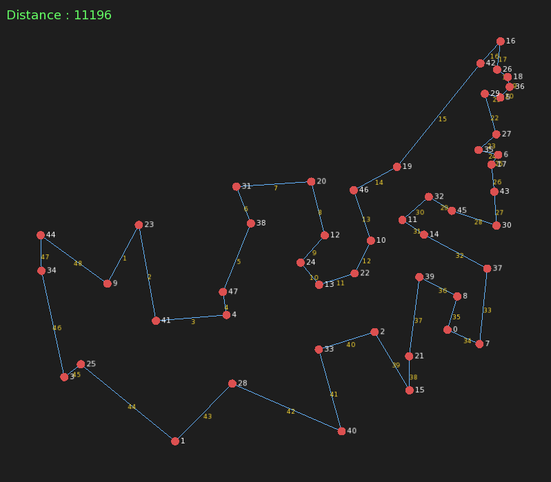
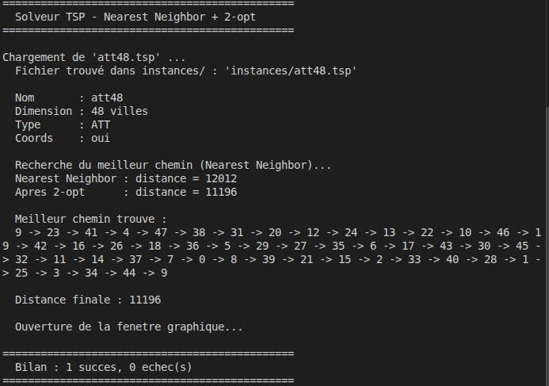

Sommaire
1. Architecture du projet
Le projet est organisé selon une séparation claire entre les en-têtes
(include/) et les implémentations
(src/). Cliquez sur un fichier pour
afficher sa description.
💡 Cliquez sur un fichier ci-dessous pour afficher son rôle.
Calc
Reader
Neighbor
2. Rappel du problème
Le Problème du Voyageur de Commerce (TSP — Travelling Salesman Problem) consiste à trouver le chemin le plus court permettant de visiter un ensemble de n villes exactement une fois, puis de revenir à la ville de départ.
Formellement, soit un graphe complet et pondéré G = (V, E, w) où V est l'ensemble des villes, E les arêtes et w(i,j) la distance entre la ville i et la ville j. On cherche une permutation σ de V minimisant :
Coût(σ) = w(σ(n), σ(1)) + ∑ w(σ(i), σ(i+1)) pour i = 1 .. n-1
Le TSP est un problème NP-difficile : le nombre de
solutions possibles croît en (n-1)! / 2.
Pour 48 villes (instance att48), cela représente environ
1059 tournées à évaluer
par force brute — ce qui est impossible en pratique. On recourt donc
à des heuristiques.
Les fichiers .tsp utilisés sont au
format TSPLIB, un standard académique qui décrit les
instances par un en-tête (nom, dimension, type de distance) suivi des
données (coordonnées ou matrice explicite).
3. Structures de données
Toutes les informations d'une instance TSP sont regroupées dans une
unique structure TSPInstance, définie
dans TSPInstance.h.
// Coordonnées 2D d'un nœud
struct NodeCoord {
double x;
double y;
};
// Structure principale représentant une instance TSP
struct TSPInstance {
char name[256]; // Nom de l'instance (ex : "att48")
int n; // Nombre de villes
int weight_type; // Type de distance : EUC_2D, ATT ou EXPLICIT
int weight_format; // Format de la matrice (UPPER_ROW, ...)
int **dist; // Matrice de distances [n][n]
NodeCoord *coords; // Coordonnées des nœuds (nullptr si absentes)
bool has_coords; // true si les coords sont disponibles
};
La matrice de distances dist[i][j]
est une matrice carrée symétrique allouée dynamiquement. Chaque entrée
contient la distance entière (arrondie selon la métrique) entre la
ville i et la ville j.
Sa taille est n × n entiers.
Selon le type de fichier, les distances sont soit lues directement
(format EXPLICIT UPPER_ROW), soit
calculées depuis les coordonnées selon deux métriques TSPLIB :
| Métrique | Formule | Usage |
|---|---|---|
EUC_2D |
round( √(Δx² + Δy²) ) |
Distance euclidienne arrondie |
ATT |
ceil( √((Δx² + Δy²) / 10) ) |
Pseudo-euclidienne — instance att48 |
4. Pipeline d'exécution
À chaque fichier .tsp passé en
argument, le programme suit les étapes suivantes :
La phase Nearest Neighbor est lancée depuis chaque ville comme point de départ (soit n exécutions). On ne conserve que le meilleur chemin, qui est ensuite amélioré par 2-opt. Cette approche multi-départ améliore significativement la qualité de la solution initiale avant optimisation locale.
5. Algorithme Nearest Neighbor (Plus Proche Voisin)
Le Nearest Neighbor est une heuristique gloutonne (ou greedy) : à chaque étape, on choisit localement la meilleure option sans revenir en arrière. C'est l'heuristique de construction utilisée dans ce projet.
Principe en 4 étapes
Initialisation
On part d'une ville de départ. On crée un tableau visite[] pour mémoriser les villes déjà parcourues, et un tableau chemin[] de taille n+1 pour stocker le tour.
Recherche du plus proche voisin
Depuis la ville courante, on parcourt toutes les villes non encore visitées et on retient celle dont la distance est minimale dans dist[actuel][j].
Déplacement
On se déplace vers cette ville, on la marque visitée, on l'ajoute au chemin. On répète l'étape 2 jusqu'à avoir visité toutes les villes (n fois).
Fermeture du tour
On ajoute la ville de départ en fin de tableau pour boucler le chemin : chemin[n] = villeDepart.
Code — AlgoNearestNeighbor.cpp
int* nearestNeighbor(TSPInstance* inst, int villeDepart) {
int n = inst->n;
bool* visite = new bool[n];
for (int i = 0; i < n; i++) visite[i] = false;
int* chemin = new int[n + 1]; // taille n+1 : retour au départ inclus
int actuel = villeDepart;
visite[actuel] = true;
chemin[0] = actuel;
for (int etape = 1; etape < n; etape++) {
int meilleureDist = -1;
int meilleureVille = -1;
for (int j = 0; j < n; j++) {
if (visite[j]) continue; // ignorer les villes déjà visitées
int dist = inst->dist[actuel][j];
if (meilleureDist == -1 || dist < meilleureDist) {
meilleureDist = dist;
meilleureVille = j;
}
}
actuel = meilleureVille;
visite[actuel] = true;
chemin[etape] = actuel;
}
chemin[n] = villeDepart; // retour à la ville de départ
delete[] visite;
return chemin; // à libérer avec delete[] dans l'appelant
}6. Optimisation locale 2-opt
Le 2-opt est une méthode d'optimisation locale qui améliore un chemin existant en cherchant à supprimer les croisements d'arêtes. Il est appliqué après le Nearest Neighbor pour affiner la solution.
Principe
Pour chaque paire d'arêtes (A→B) et
(C→D) du chemin, on teste si les
remplacer par (A→C) et
(B→D) (en inversant le segment entre
B et C) raccourcit le tour. Si oui, l'inversion est conservée et on
recommence depuis le début. On s'arrête quand aucune amélioration
n'est plus possible.
La condition d'amélioration est simplement :
dist[A][B] + dist[C][D] > dist[A][C] + dist[B][D]
↓ si vrai : inverser le segment [B .. C]Code — Algo2OPT.cpp
void twoOpt(TSPInstance* inst, int* chemin, int taille) {
int n = taille - 1; // nombre de villes (sans le retour)
bool amelioration = true;
while (amelioration) {
amelioration = false;
for (int i = 0; i < n - 1; i++) {
for (int j = i + 2; j < n; j++) {
int a = chemin[i], b = chemin[i + 1];
int c = chemin[j], d = chemin[j + 1];
int distActuelle = inst->dist[a][b] + inst->dist[c][d];
int distNouvelle = inst->dist[a][c] + inst->dist[b][d];
if (distNouvelle < distActuelle) {
// Inversion du segment entre i+1 et j
inverserSegment(chemin, i + 1, j);
amelioration = true;
}
}
}
}
}
La fonction auxiliaire inverserSegment
inverse les indices du tableau entre les positions
gauche et droit
par des échanges successifs, en O(n).
7. Analyse de la complexité
| Algorithme | Complexité temporelle | Complexité spatiale | Qualité |
|---|---|---|---|
| Force brute | O(n!) |
O(n) |
Optimale — inapplicable dès n > 15 |
| Nearest Neighbor (1 départ) | O(n²) |
O(n) |
Approchée — rapide |
| Nearest Neighbor (n départs) | O(n³) |
O(n) |
Meilleure solution initiale |
| 2-opt (par passe) | O(n²) |
O(1) |
Amélioration locale — converge |
| Total (n départs + 2-opt) | O(n³) + O(k·n²) |
O(n²) (matrice) |
Très bonne approximation |
k désigne le nombre de passes 2-opt jusqu'à convergence.
La matrice de distances alloue n × n entiers en mémoire,
soit pour att48 : 48 × 48 × 4 octets = ~9 Ko — négligeable.
8. Résultats — instance att48
L'instance att48.tsp est un exemple
classique de TSPLIB comportant 48 villes dont les
coordonnées sont des positions d'États américains. La distance utilisée
est la métrique ATT (pseudo-euclidienne).
Sortie console
==========================================
Solveur TSP - Nearest Neighbor + 2-opt
==========================================
Chargement de 'att48.tsp' ...
Fichier trouvé dans instances/ : 'instances/att48.tsp'
Nom : att48
Dimension : 48 villes
Type : ATT
Coords : oui
Recherche du meilleur chemin (Nearest Neighbor)...
Nearest Neighbor : distance = 12012
Apres 2-opt : distance = 11196
Meilleur chemin trouve :
9 -> 23 -> 41 -> 4 -> 47 -> 38 -> 31 -> 20 -> 12 -> 24 -> 13 -> 22
-> 10 -> 46 -> 19 -> 42 -> 16 -> 26 -> 18 -> 36 -> 5 -> 29 -> 27
-> 35 -> 6 -> 17 -> 43 -> 30 -> 45 -> 32 -> 11 -> 37 -> 0 -> 8
-> 39 -> 21 -> 15 -> 2 -> 33 -> 40 -> 28 -> 1 -> 25 -> 3 -> 34 -> 44 -> 9
Distance finale : 11196
==========================================
Bilan : 1 succes, 0 echec(s)
==========================================Visualisation SFML
La fenêtre graphique est générée par SFML via le module
Visualizer.cpp. Les villes sont
représentées par des points rouges, les arêtes du tour en bleu,
et les numéros d'étape en jaune.


Bilan chiffré
| Étape | Distance obtenue | Gain |
|---|---|---|
| Après Nearest Neighbor (meilleur sur 48 départs) | 12 012 | — |
| Après 2-opt | 11 196 | − 816 (−6,8 %) |
| Optimum connu (TSPLIB) | 10 628 | Écart : +5,3 % |
La solution obtenue est à environ 5,3 % au-dessus de l'optimum connu, ce qui est un résultat satisfaisant pour une approche heuristique simple sans exploration exhaustive.